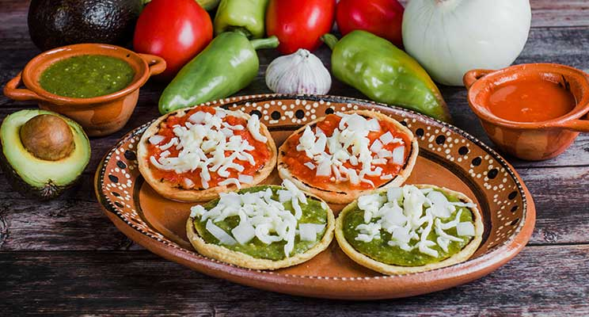

Traditional Mexican cuisine is so much more than authentic dishes and spices; it's a vibrant, lovingly preserved, cultural heritage.
Planting and harvesting native ingredients such as corn and chile peppers in chinampas… Manually grinding grain for tortillas on stone and mortar… Traditional Mexican cuisine embraces an entire heritage of culture dedicated to maintaining Mexico’s indigenous customs and cultural traditions.
